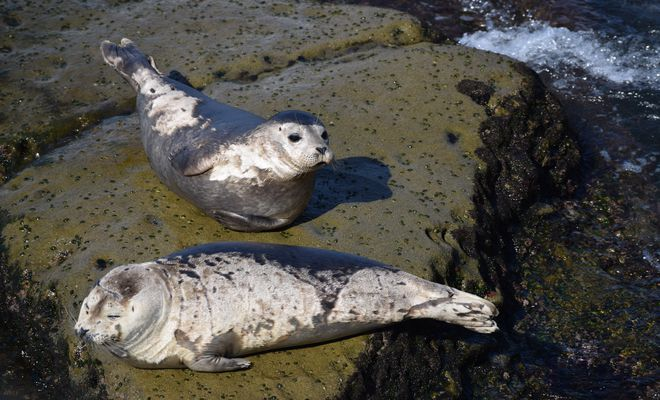
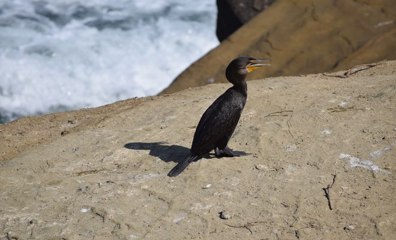

This was my first project in the Nanodegree program. In this project I learnt how to write an application
using object-oriented Python and make this application serve HTML via a web server.I wrote server-side
code to store a list of my favorite movies, including box art imagery and a movie trailer URL. Then wrote
code to generate a static web page allowing visitors to browse their movies and watch the trailers.
Ipsum

In this project I created a page based on the mockup provided while working extensively with HTML,CSS,
the box model, positioning, semantic tags and images while understanding the concept of code, test
and refine.
Front End Ninja
In this project I was provided with a design mockup as a PDF-file which I
replicated in HTML and CSS.I developed a responsive website that displays
images, descriptions and links to each of the portfolio projects completed
throughout the course of the Front-End Web Developer Nanodegree.